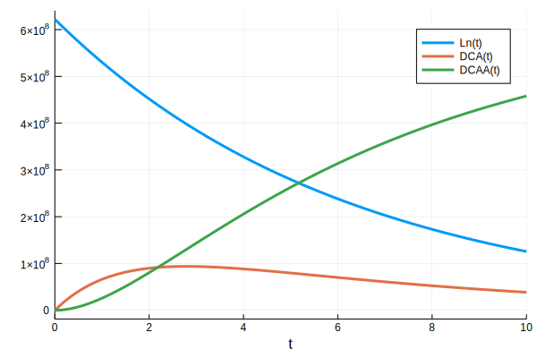
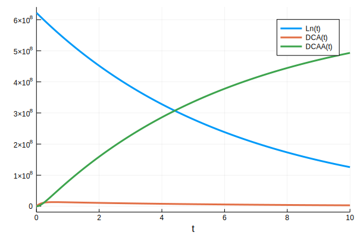

Environmental Model
An important goal of our project is to determine whether, in the viscinity of a root nodule, the Linuron concentration is significant enough to damage the Rhizosphere and inhibit nodule growth as plants continue to develop.
In order to model this, we introduce a diffusion-reaction-advection model, which is a standard method in environmental engineering practices. As a consequence of this we are able to develop heuristics for whether Linuron and 3,4-DCA runoff is significant in addition to the original purpose of the model. The model is compared to a similar model by Owsianiak et al [1] for Linuron degradation in bioaugmentation beads. The paper by Owsianiak relied on the use of Variovorax sp. [4], which is one of the species responsible for our system - as such we credit many of our parameters to them.
Insert Video
Introducing the Model
As partial differential equation models are quite rare in the world of iGEM, we will introduce this model from the ground up. The first component of the model is Fick's Law.
$$ C = [\textrm{Linuron}] $$
$$ D = \textrm{diag}(D_x,D_y,D_z) $$
$$ \nabla\cdot(D\nabla C) = \frac{\partial C}{\partial t} $$
The object D is called the diffusion matrix, which determines the speed of diffusion in different directions. Next, we add an advection term in order to model the movement of Linuron being carried by water.
$$ \nabla \cdot (D\nabla C) - \vec{v}_e \cdot \nabla C = \frac{\partial C}{\partial t}$$
This advection term relies on the hydraulic head, which is a measure of water pressure in the soil. However, water tends to flow around the root nodules, so Linuron transport is diffusion-dominated inside the nodule. Therefore we must use the Navier-Stokes equation in order to find the advection velocity. In order to model degradation, we couple this with our kinetic model to find the following coupled system of PDEs.
$$ \nabla \cdot (D\nabla C) - \vec{v}_e \cdot \nabla C = \frac{\partial C}{\partial t} + \chi_n \frac{V_{max}C}{K_m-C} $$
$$ \varrho \left( \frac{\partial v_e}{\partial t} - v_e \cdot \nabla v_e \right) = \nabla \cdot \sigma(v_e,p)+f $$ $$ \nabla \cdot v_e = 0 $$
Assumptions
In the above model, we are assuming an averaged rate of water intake - this is necessary due to the difficulties with rain models. One can see that this assumption should produce a reasonable approximation since the timescale we are working with is over weeks to months, whereas the rate of rainfall is on the order of days.
We also needed to verify that the rate of water transport into the nodule tissue is not limited by physiological factors such as membrane transport. In order to do this, we used the Octanol-Water partition coefficient in order to predict the rate of membrane transport using Overton's Rule [2]:
$$ P=\frac{K_{ow}D}{\ell} $$
From this we found that the transport of Linuron into plant cells is not membrane-transport limited. In addition, the paper [1] found that background degradation of Linuron by the same pathway is negligible compared to degradation by Variovorax sp., as such we ignore it in the model.
Numerical Methods
In order to solve this model we first convert the system into variational form. The Navier-Stokes terms are solved by a midpoint discretization method called Chorin's Method, while the remainder is just solved using the backwards Euler method. The following equations are obtained by integrating the above PDEs and applying integration by parts.
$$\int_\Omega \frac{\partial C}{\partial t} w d\tau = \int_\Omega \left[\nabla \cdot (D \nabla C)w - w v_e\cdot \nabla C - \frac{V_{max}C}{K_m-C}\right] d \tau =$$
$$\int_\Omega \left[(-\nabla C)^T D^T \nabla w -wv_e\cdot \nabla C - \frac{V_{max}C}{K_m-C}\right] d \tau + \int_{\partial \Omega} w( \nabla C)\cdot d \vec{s}$$
We then write these equations into python using the framework FeNiCS [3], which is a free library for solving PDEs using the Finite Element Method. Teams interested in using PDE solvers for their iGEM project should consider FeNiCS as a good alternative to expensive or large-scale programs. Using ParaView one can export animations and data from pythons' results. We also used the python library meshio in order to convert meshes generated by Gmsh into a format compatible with FeNiCS. As a note to iGEM teams in the future considering PDE transport models, your discretization must meet the Courant-Freidrichs-Lewy (CFL) condition in order to be stable.
LibA-NAT1 Pathway
The following is our reaction of interest.
$$\text{H}2\text{O} + \text{Linuron} \longrightarrow \text{N,O-dimethylhydroxylamine} + \text{CO}_2 + \text{3,4-dichloroaniline.}$$
It is known that purified LibA is a monomeric linuron hydrolase of ∼55 kDa with a Km and a Vmax for linuron of 5.8 μM and 0.16 nmol per minute for
The second step in the reaction involving NAT1 is characterized in Rodrigues-Lima [5]. The rate for 3,4-dichloroaniline degradation with NAT1 is computed to be 68 ± 8 nmol. per min. per mg. of enzyme. In addition, the ratio of Km to Vmax is estimated to be 0.005 per minute for the NAT-dependent pathway for biotransformation of 3,4-DCA within Mesorhizobium loti.
This ratio does not give us enough information for our reaction network. This is why we will (for the time being) assume a constant concentration of NAT1.
Computations
We will first load the relevant Julia packages
using DiffEqBiological;
using DifferentialEquations;
using Plots;
using Latexify;We will now construct our reaction network.
rs = @reaction_network begin
mm(DCA,V_max_LibA,K_m_LibA), Ln → DCA # Linuron to DCA reaction through LibA, irrelevant molecules are ignored, see below.
rate_NAT1, DCA → DCAA # NAT1 reaction, irrelevant molecules are ignored see below
end V_max_LibA K_m_LibA rate_NAT1The mm(X,v,K) function is DiffEqBiological's Hill function. The first argument encodes the substrate in question and V, K are the paramters for the Hill function. Although LibA also needs water, for the purpose of modelling, it is safe to ignore it because it is relatively infinite. With the model eventually shwon on the wiki, the water concentration will be shown and taken into account but it is not necessary at this stage (the qualitative and even maybe quantitative differences in the solutions for not including all of the reactatns and products are going to be minimal since not including them is essentially the same as asssuming that we will never have to worry about or measure their concentrations). The same goes for the NAT1. When we start considering varying enzyme concentrations due to the expression of the enxymes, this will come back to bite us but it is not a problem for now. The differential equations are:
$$ \frac{dLn}{dt} = - \frac{V_{max_LibA} \cdot DCA}{K_{m_LibA} + DCA} \cdot Ln $$ $$ \frac{dDCA}{dt} = \frac{V_{max_LibA} \cdot DCA}{K_{m_LibA} + DCA} \cdot Ln - rate_{NAT1} \cdot DCA $$ $$ \frac{dDCAA}{dt} = rate_{NAT1} \cdot DCA $$
A little less useful but I still think its cool that we can do this. It'll become important in other modelling. The following is the chemical reaction network.
$$ Ln \to DCA \hspace{1em} \left[\frac{V_{max_LibA} \cdot DCA}{K_{m_LibA} + DCA}\right] $$ $$DCA \to DCAA \hspace{1em} \left[[rate_{NAT1}]\right]$$
From above, we have these parameters.
V_max_LibA = 0.16;# nmol per min.
K_m_LibA = 5800.; # nmol
NAT1_rate_per_mg = 68.; # nmol per min. per mg.
NAT1_conc = 0.01;# arbitrarily set to 10 ng for now, not sure how valid it is.
rate_NAT1 = NAT1_conc*NAT1_rate_per_mg;
p_10 = (V_max_LibA, K_m_LibA, rate_NAT1);We now assume that there is 622000000 nmol of Linuron per plate (due to a calculation by Nicki), which is why we safely assumed that there is approximate 10 ng of NAT1 (again, ballpark). In addition, the solvers require that there is a non-zero amount of DCA and DCAA already present so we set the initial conditions as follows:
u0 = [622000000., 0.001, 0.001];
tspan = (0., 10.);We will now setup the problem, solve it, and plot the solutions.
prob_10 = ODEProblem(rs, u0, tspan, p_10);
sol_10 = solve(prob_10, DynamicSS(Tsit5()));plot(sol_10)
We see that if we assume we have 100 ng, the DCA concentration drops to much lower.
NAT1_conc = 0.1;# 100 ng now
rate_NAT1 = NAT1_conc*NAT1_rate_per_mg;
p_100 = (V_max_LibA, K_m_LibA, rate_NAT1);
prob_100 = ODEProblem(rs, u0, tspan, p_100);
sol_100 = solve(prob_100, DynamicSS(Tsit5()));
plot(sol_100)
Going up one more order, we see that it drops to essentially zero.
NAT1_conc = 1.;# 1 mg now
rate_NAT1 = NAT1_conc*NAT1_rate_per_mg;
p_1000 = (V_max_LibA, K_m_LibA, rate_NAT1);
prob_1000 = ODEProblem(rs, u0, tspan, p_1000);
sol_1000 = solve(prob_1000, DynamicSS(Tsit5()));
plot(sol_1000)
Since the Hill function only models substrate concentration against reaction rates, the enzyme concentration is not being modelled quantitatively (thereby assumed to be infinite). We can easily modify the above to take into account varying enzyme concentrations. In the case of the NAT1 enzyme, this directly corresponds to varying NAT1_conc which is easy since Julia allows you to define your own function for the reaction parameters which would in our case be varying over time against another "HIll-ish" function or one that better approximates gene expression. In the case of LibA, incorporating varying concentrations of LibA is done by moving away from the Hill function into a form such as for NAT1 (using the paramters to derive new ones and if its not possible, measuring them/finding them in literature) and then repeating what we did for NAT1 for LibA.
Now if we start to consider both enzymes (LibA and NAT1) under the same promoter, we see that both will be generated at the same rate. We can choose to model both the mRNA and protein production and decay but we do not have rates for this so we're just gonna use the quasi-steady state approximation. This changes our reaction network to
rss = @reaction_network begin
r_1, ∅ → NAT1 + libA
r_2, NAT1 → ∅
r_3, libA → ∅
mm(DCA, V_max_LibA,K_m_LibA), Ln + libA → DCA + libA # Linuron to DCA reaction through LibA, irrelevant molecules are ignored, see below
rate_NAT1*NAT1, DCA → DCAA # NAT1 reaction, irrelevant molecules are ignored see below
end r_1 r_2 r_3 V_max_LibA K_m_LibA rate_NAT1Conclusions
LibA-NAT1
For the LibA-NAT1 system, assuming that the LibA parameters of Km and Vmax are accurate for our system, we see that at a NAT1 concentration of 10 picomol, that the system hits a maximum 3,4-DCA concentration of less than a third of the initial Linuron concentration. For all concentrations above 10 picomol of NAT1, the system can easily handle large concentrations of Linuron and NAT1. Even in the case of the unreasonable rates of influx, 1 picomol of NAT1 resulted in a steady state concentration of Linuron and 3,4-DCA, around a third of the original concentration, and was well under a third for reasonable rates of influx.
This implies that depending on the particular application, the promoter for NAT1 could be adjusted in order to hit the required 3,4-DCA and Linuron tolerance. Specifically, this demonstrates that our system is not only practical and efficient, but easily extendible to extremely sensitive rhizobia. Unfortunately, the stochastic models provided little insight into the mechanisms of this system since the system is too simple.
PuhB-NAT1
This system was considered because it provided a way to analyze the system under different PuhB concentrations since the $k_{cat}$ value for PuhB with respect to Linuron were found in the literature. From this, we see that the maximum concentration of 3,4-DCA and Linuron can be adjusted to arbitrary ranges depending on the particular application. In particular, we see that even in the case of $1$ picomol of NAT1, if there are 0.01 picomols of PuhB the system will be able to process Linuron rather effectively given a constant amount of Linuron. In the case of influx however, if there is a large influx of Linuron, the PuhB concentration and NAT1 must be increased in order to maintain a steady state concentration of Linuron and 3,4-DCA such that the rhizobia does not die. In the cases of smaller influxes, it appears that the system is relatively stable and efficient at around 0.01 picomols of PuhB and $10$ picomols of NAT1.
References
- [1] Owsianiak, M., Dechesne, A., Binning, P. J., Chambon, J. C., Sørensen, S. R., & Smets, B. F. (2010). Evaluation of Bioaugmentation with Entrapped Degrading Cells as a Soil Remediation Technology. Environmental Science & Technology, 44(19), 7622–7627. doi: 10.1021/es101160u
- [2] Grime, J. M. A., Edwards, M. A., Rudd, N. C., & Unwin, P. R. (2008). Quantitative visualization of passive transport across bilayer lipid membranes. Proceedings of the National Academy of Sciences, 105(38), 14277–14282. doi: 10.1073/pnas.0803720105
- [3] Zakharov, P. E. (2018). The FEniCS project. Spark. doi: 10.1515/spark.18.13
- [4] Bers, K., Leroy, B., Breugelmans, P., Albers, P., Lavigne, R., Sørensen, S. R., ... Springael, D. (2011). A Novel Hydrolase Identified by Genomic-Proteomic Analysis of Phenylurea Herbicide Mineralization by Variovorax sp. Strain SRS16. Applied and Environmental Microbiology, 77(24), 8754–8764. doi: 10.1128/aem.06162-11
- [5] Rodrigues-Lima, Fernando & Dairou, Julien & Diaz, Clara & Rubio, Maria & Sim, Edith & Spaink, Herman & Dupret, Jean-Marie. (2006). Cloning, functional expression and characterization of Mesorhizobium loti arylamine N-acetyltransferases: Rhizobial symbiosis supplies leguminous plants with the xenobiotic N-acetylation pathway. Molecular microbiology. 60. 505-12. 10.1111/j.1365-2958.2006.05114.x.